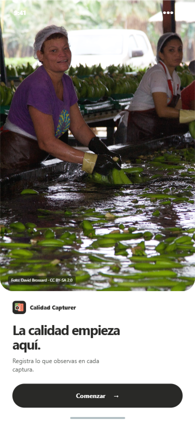
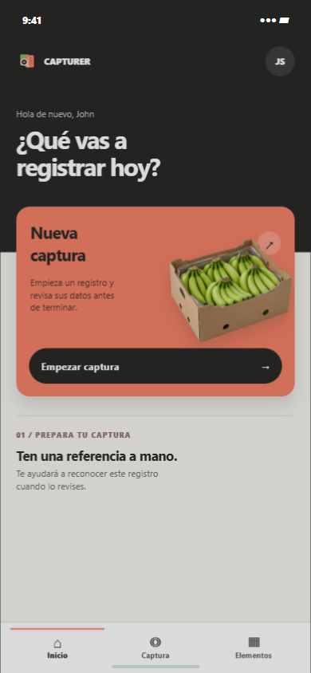
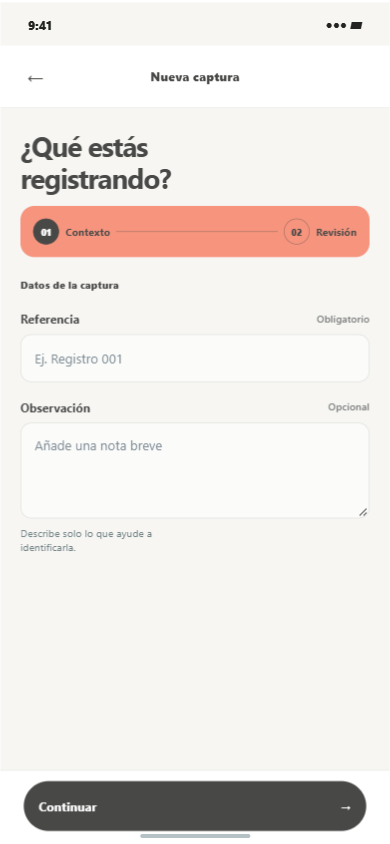
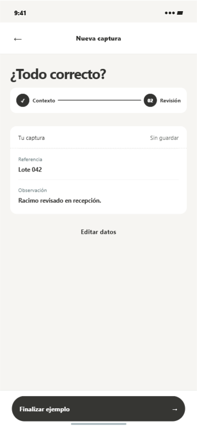

Calidad CapturerIdentidad móvil · exploración 05
Fotografía, tactilidad y lectura precisa.
Una dirección visual aplicada al recorrido.




Fotografía, tactilidad y lectura precisa.
Una dirección visual aplicada al recorrido.



